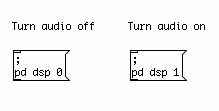
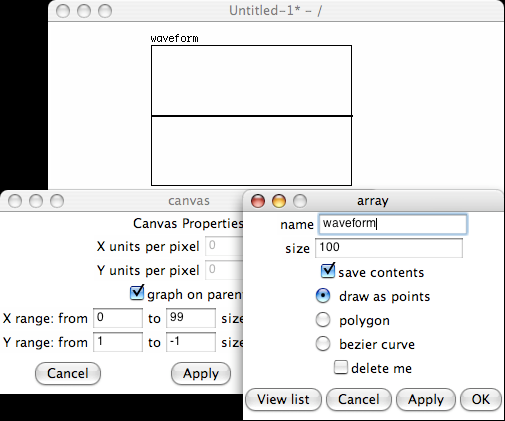
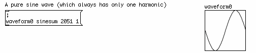
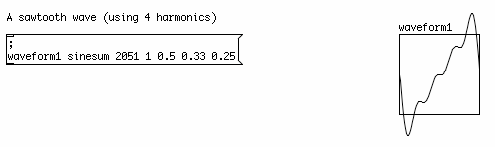
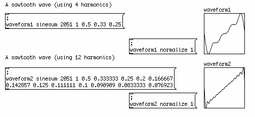
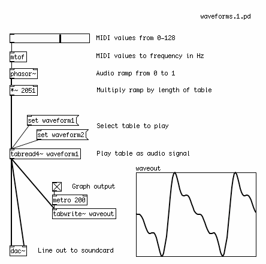
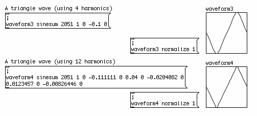
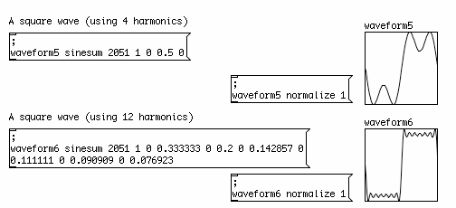

Generating Waveforms
Outline
This chapter will cover generating sawtooth, triangle and square waveforms from a combination of sine wave harmonics, graphing these waveforms to an array and playing this array back as an oscillator.
Introduction
Besides using the built-in oscillators such as [osc~] and [phasor~], or using audio mathematics on the output of [phasor~] to create new waveforms, it is possible to generate the waveforms of a saw, triangle or square wave out of a combination of sine waves. When written to an array, these waveforms can be played back as an oscillator.
This method has a few advantages over using [phasor~] to create different waveforms. The first advantage is that the resulting waveforms will be bandlimited. This means the number of harmonics they produce will be limited, and will cause less aliasing noise. For more details on aliasing, see the Antialiasing chapter of this FLOSS Manual.
The second advantage is that these waveforms much more closely resemble the kinds of waveforms generated by analog electronics. Real world analog waveforms do not have the completely sharp angles of their idealized, digital counterparts due to the "rippling" effect inherent in the resonance of their circuitry. One could subjectively say that these waveforms are more "warm" and "analog-sounding" than the ones produced by [phasor~].
The basic principle we will use here comes from the Fourier theorem. This theorem states that any complex waveform can be broken down into a series of simpler sine waves which, when added back together, can reproduce that waveform. The more sine waves used to represent the complex wave, the more accurate the reproduction will be. While a full explanation of the math behind this is outside the scope of this manual, we will cover the use of this theorem to create three basic wave forms, the sawtooth, the triangle and the square.
Using Sinesum
In Pd, we can write waveforms to a table using an internal message. An internal message is a message box which, when clicked, sends the message inside to the Pd application itself. An example would be the messages we can use to turn audio processing on and off in Pd:

So to create and load a table with a waveform, we must first create an array from the Put menu. Then we give it the name "waveform" in the properties:

After that, we create a message, and type the following in it (using the Return key after the semicolon to start a new line):
; waveform sinesum 2051 1
The semicolon indicates that the message is an internal message, and "waveform" indicates that we are sending information to the array named "waveform". The word "sinesum" tells the array that we will be sending it a series of harmonics to graph. The number "2051" tells the array that we want to graph those harmonics out on 2051 units on the X range, so the array will be resized from 100 (its default size) to 2051. Finally, the number "1" indicates that we want to write a single sine wave with a peak amplitude of 1 to the array.
When we click the message, we see a pure sine wave graphed to the array:

Sawtooth Wave
The way that sinesum works is that you send it a list of the amplitudes of the harmonics you wish to graph. A sawtooth wave is the simplest, as it uses the formula 1/h (where "h" indicates the number of the harmonic) to compute the amplitudes. Therefore, the amplitude of the first harmonic is 1/1 = 1, the second is 1/2 = 0.5, the third is 1/3 = 0.33333, etc etc.
Here is a message to compute a very rudimentary sawtooth wave using only four harmonics:
; waveform1 sinesum 1 0.5 0.33 0.25
And here it is graphed:

Because the graph is the product of several sine waves being added up, the waveform can go outside the normal -1 to 1 bounds of an audio signal. The message:
; waveform1 normalize 1
will adjust the range of the signal to fit within the bounds of -1 and 1. Below, we have two examples of sawtooth waves, both normalized to the range of -1 to 1. As can be seen, the more harmonics used to calculate the waveform, the closer it gets to its idealized mathematical form:

Playback of the Graphed Waveforms
To play back the waveforms we have graphed to the arrays, we use the [tabread4~] object. It takes an audio signal as its input, which reads along the X axis of the array and outputs as an audio signal the values that it finds along the Y axis.
We can use [phasor~] to play the array as an oscillator when we scale its output, which is normally 0 to 1, to fit the whole length of the array. Thus, if our array is 2051 places long, then we can use an Audio Multiplication [*~] object to get an output of 0 to 2051. Increasing the frequency of the [phasor~] will increase the frequency at which the waveform in the array is played back from start to finish

The [tabread4~] object can take the name of the array it will read as a creation argument, or you can use a message such as the following to change the array it reads from:
set waveform 2
Triangle Wave
A triangle wave can also be quite simply generated with only a few harmonics. The shape of a triangle wave is made using only the odd harmonics (1, 3, 5, 7, etc). Zeros are used for the amplitude of the even harmonics (2, 4, 6, 8, etc). Then 1 is divided by the square of each of those harmonics (i.e. 1/h2). Finally, the amplitude of every other harmonic is multiplied by -1 (i.e. the amplitudes of the third, seventh, ninth, etc harmonics). The triangle wave takes shape very quickly with only four harmonics, and as more harmonics are added, the points of the triangle become sharper.

Square Wave
A square wave takes a few more added harmonics to get close to its ideal mathematical shape. This waveform is created also using only the odd-numbered harmonics (1, 3, 5, 9...), and zero is also used for the amplitude of the even harmonics (2, 4, 6, 8...). Then 1 is divided by the number of the harmonic to get its amplitude (i.e. 1/h). As illustrated below, a square wave made up of only four harmonics isn't very square, but when more harmonics are added its shape becomes very clear.
